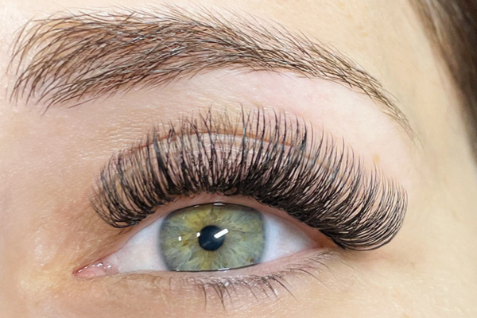
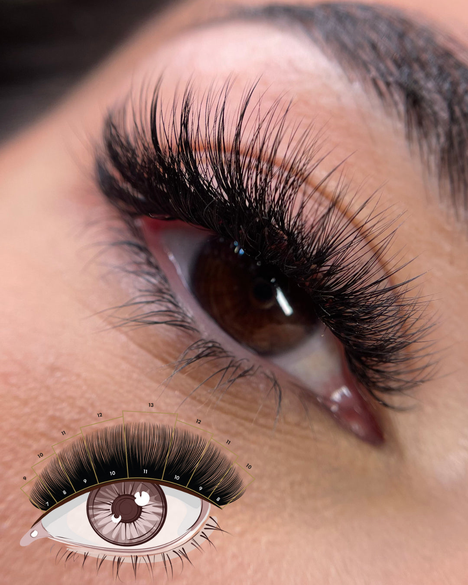
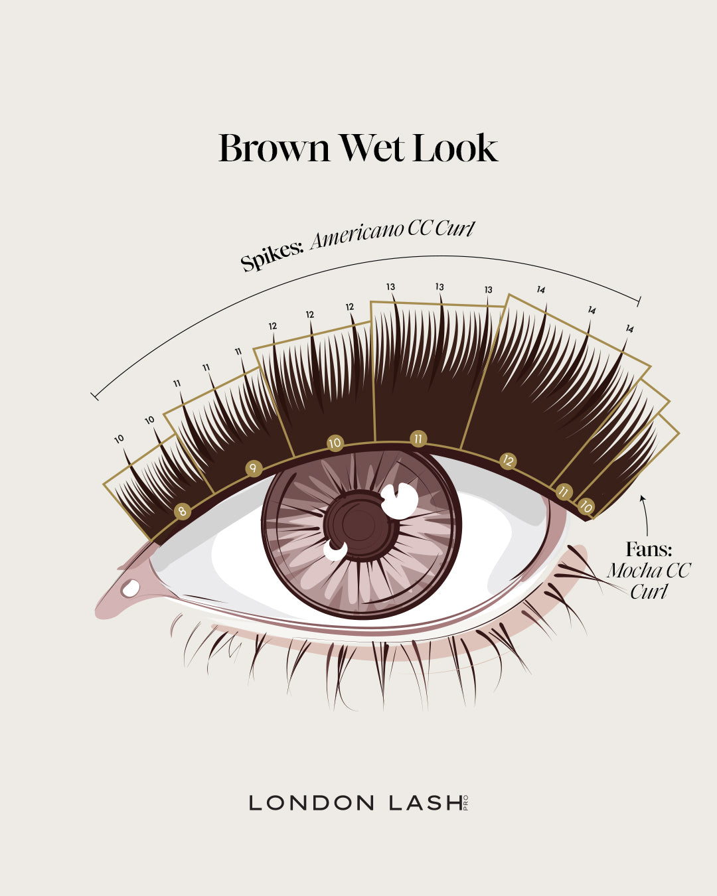
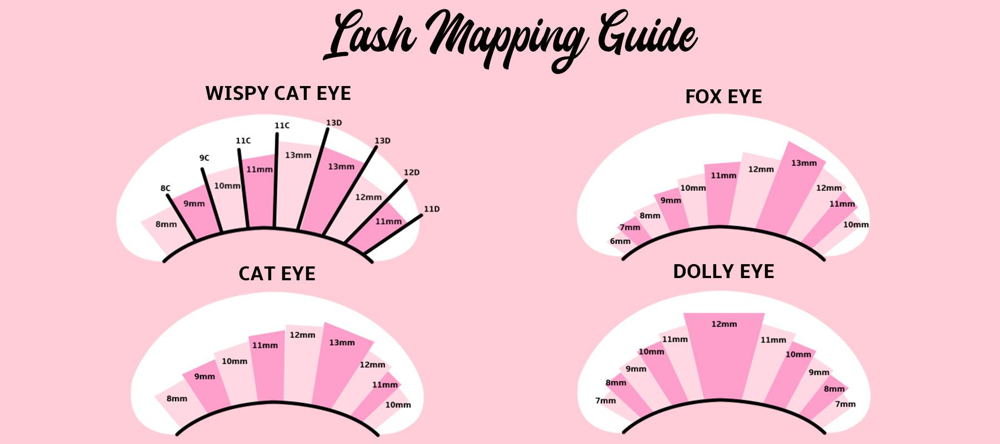
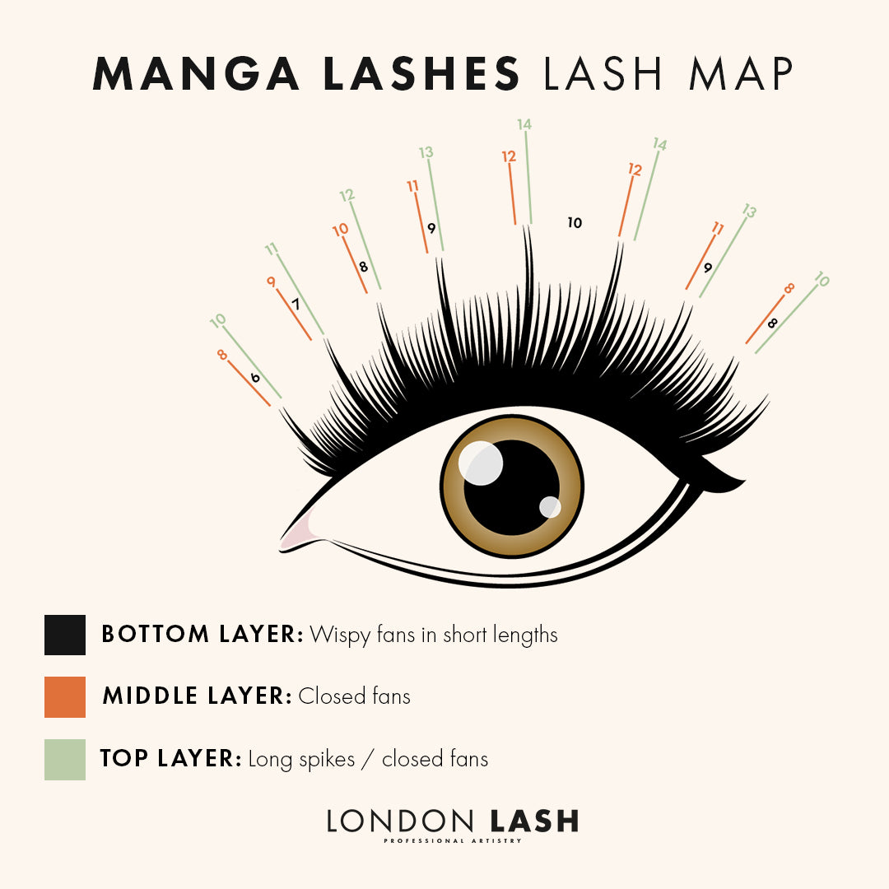

Reference photos and mapping guides were reviewed for silhouette and structure. The app renders its own existing isolated hair textures; it does not paste these website photographs onto a face.
| Catalog styles | Implementation and source |
|---|---|
| Classic, Hybrid, Hybrid Lash, Hybrid Volume | Singles vs a blend of singles and open fans. Existing Classic/Hybrid rendering preserved; Hybrid Volume uses more fans. The Lash Lounge: actual hybrid photo  |
| Volume, Russian Volume, DragLash (Mega Volume) | Increasing fan density with finer individual strands. Russian Volume is a rounded, more uniform interpretation of volume, not a universally separate technique. London Lash Lookbook ? The Power Set (actual photo and map)  |
| Wispy, Light Wispy, Wispy Volume, Wispy Cat Eye | Longer spikes over shorter bases; base density varies. Cat variant lengthens outward. London Lash Lookbook ? Signature Staple |
| Mascara Lash, Mascara Volume, Kylie (Wetlook) | Narrow clusters/closed fans; volume variant has more coverage, Kylie Wetlook adds longer separated spikes. These salon names are interpreted, not exact reproductions of a salon's unpublished lash maps. Wet look tutorial ? Lookbook ? Neutrals Edit  |
| Cat Eye, Dolleye, Kitten Lash, Fox Eye | Cat grows toward the outer eye, doll peaks at center, kitten is a softer outer lift with corner taper, fox has a shorter inner profile and stronger outer sweep. London Lash mapping guide ? VAVALASH mapping diagrams  |
| Anime Lash/Manua | Prominent, separated pointed clusters over a short base. Upper lashes only; this preview does not add lower-lash manga spikes. Manga lash mapping guide  |
| Strip Lash | A flared, crisscross interpretation with a subtle band. Strip lash describes an application type, so this is one representative style. Ardell Faux Mink Demi Wispies: actual product and on-eye photos |
Sources checked 25 September 2026. Preview proportions are visual estimates, not physical millimeter measurements or a guarantee of a salon result.